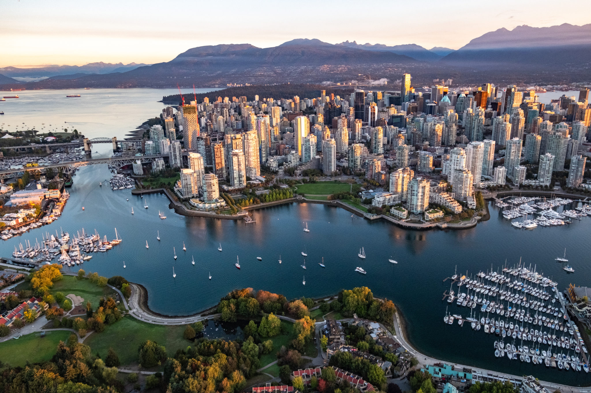
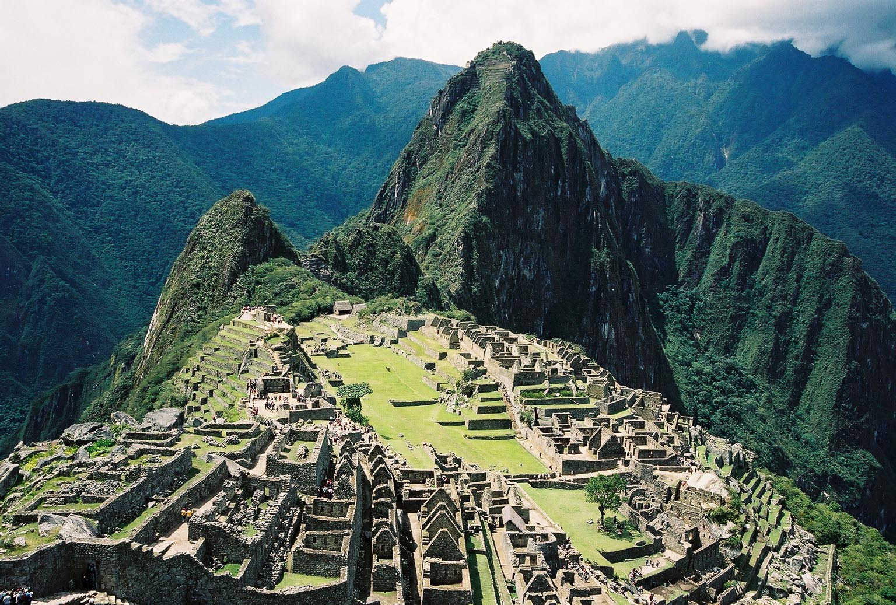
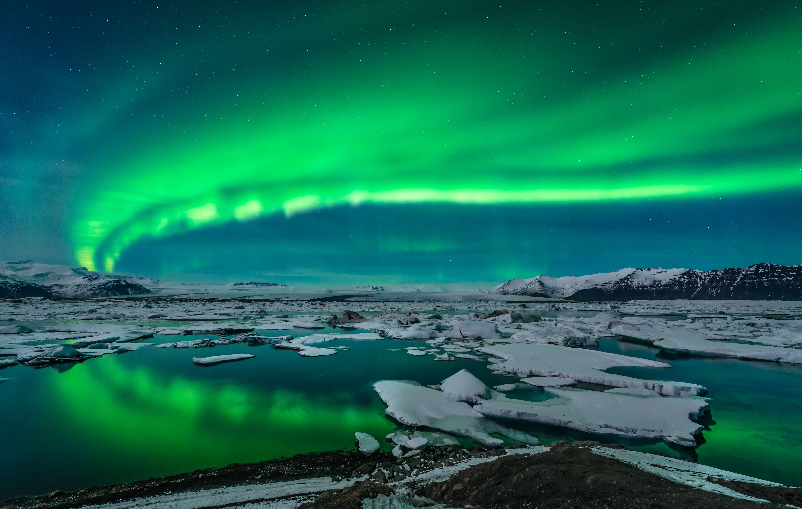

My favorite 5 destinations
First Destination:
City:
Vancouver
Country:
Canada
Flag:

Population:
Vancouver's population is 2.6 million.
Beauty of the destination:
Vancouver blends nature and modernity seamlessly. Start with a tranquil walk in Stanley Park, featuring ancient trees and the Vancouver Aquarium. Enjoy the city’s beautiful beaches like Kitsilano and English Bay, perfect for relaxation and water sports. Explore historic Gastown and vibrant Chinatown for culture and cuisine. Vancouver’s food scene offers diverse options, from seafood at Granville Island to innovative dishes in Yaletown. The city is a gateway to outdoor adventures, including skiing on Grouse Mountain and hiking the North Shore. With its mild climate and vibrant arts, Vancouver invites exploration and memorable experiences.

Second Destination:
City:
New york
Country:
United States of America
Flag:

Population:
New York City’s population is 8.8 million.
Beauty of the destination:
New York City dazzles with its dynamic energy and iconic landmarks. Manhattan features the Statue of Liberty, Central Park, and stunning skyscrapers like the Empire State Building. Times Square's neon lights and Broadway's theaters highlight the city's vibrant culture. Explore diverse neighborhoods, unique parks like the High Line, and world-class museums. New York’s culinary scene ranges from pizza to fine dining, and its waterfronts offer breathtaking skyline views. The city’s charm lies in its blend of serenity, historic landmarks, and modern excitement.

Third Destination:
City:
Peru
Country:
South America
Flag:
Population:
Peru’s population is 34 million.
Beauty of the destination:
Peru is a land of striking contrasts and rich heritage. Its diverse landscapes include the Andes Mountains, the Amazon rainforest, and the coastal desert. Iconic sites like Machu Picchu and the Sacred Valley highlight its historical depth, while vibrant festivals and a unique cuisine featuring ceviche and lomo saltado celebrate its culture. Peru's biodiversity spans from exotic wildlife in the Amazon to high-altitude species in the Andes. Cities like Lima and Cusco blend historic charm with modern vibrancy, making Peru a captivating and multifaceted destination.

Fourth Destination:
City:
Japon
Country:
East Asia
Flag:

Population:
Japan’s population is 124 million.
Beauty of the destination:
Japan offers a captivating blend of tradition and modernity. Mount Fuji and the Japanese Alps present dramatic landscapes ideal for outdoor activities. Cherry blossoms in spring create beautiful scenes, while historic temples in Kyoto and Nara highlight the country’s spiritual heritage. Tokyo’s dynamic urban environment contrasts with the peaceful atmosphere of Japanese gardens. Festivals like Gion Matsuri showcase vibrant cultural celebrations, and Japanese cuisine, from sushi to ramen, celebrates culinary excellence. Zen meditation and onsen visits provide relaxation, while the architectural blend of old and new embodies Japan’s harmonious evolution.

Fifth Destination:
City:
Iceland
Country:
North Atlantic Ocean
Flag:
Population:
Iceland’s population is 380,000.
Beauty of the destination:
Iceland is known for its stunning and diverse landscapes, including geothermal areas, glaciers, and volcanoes. Highlights include the Golden Circle's Þingvellir National Park, Gullfoss waterfall, and the Geysir geothermal area. The Vatnajökull glacier and Jökulsárlón Glacier Lagoon offer breathtaking icy vistas. The Blue Lagoon provides a relaxing experience amid volcanic rock. Iceland’s volcanic landscapes, like the Reykjanes Peninsula and Reynisfjara black sand beach, are equally impressive. In winter, the northern lights create a magical display. Reykjavik blends modern and traditional, with landmarks like Hallgrímskirkja church showcasing the island's unique beauty.
